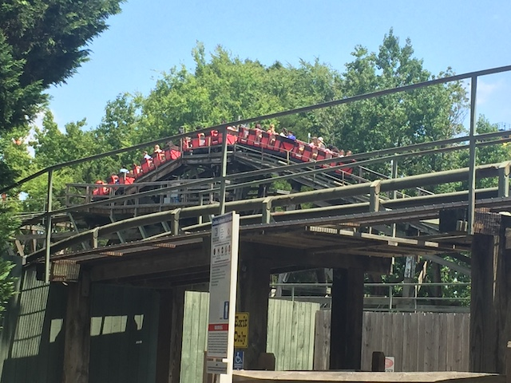

| |
Carolina Goldrusher Review

We're here at Carowinds. Today's ride we'll be reviewing for you is the Carolina Goldrusher. Yep, this is the parks mine train. And...meh. It's a weak one. So hop in the train, pull down the lap bar, and we're off! We turn out of the station, roll down some straight track, around another turn, going into more straight track. So far, this is just cruising. Down a small tiny dip, around a turn, and finally, we have something. A lifthill. It's a pretty small lifthill. Small to the point where we're being dominated by Vortex. And spoiler alert. That's a pretty small ride. We reach the top, dip down, and head through more straight track, and then head into this curve that sort of functions as a helix to the ground. So hey. We gain some speed. Finally some action on this ride. Eventually, we reach some straight track, except it's not really straight track. It's just another drop that's super gradual and non-steep. But hey. We then head into another sort of downward helix. But we're already on the ground. Well, we're heading straight into the ground. We head down into the trench, just helixing on down. And thanks to those weird things up overhead, it's only getting more intersting. I enjoy that. But soon enough, we head up a small curved hill, and begin climbing the lifthill. OK. Already time for another lifthill? Yeah. This ride has way too many lifthills. But then again, that's just the way mine trains are. We reach the top of this mine train, roll through some more straight track, because yeah. That's mainly this ride. And then we get into the good stuff. That helix of death commonly found on other mine trains. So yeah. Down the curved drop and into the helix of death. I love these things on mine trains. We then head up a small hill, only to head down a small drop as we TAKE THE TUNNEL!!!! Pop out, head around a turn, and we're in the brake run. I know this mine train gets crap for having a lot of straight track. And yeah. It does. But it's still...all right I guess.
5/10
Location: Carowinds
Opened: 1973
Built by: Arrow
Last Ridden: July 25, 2019
Carolina Goldrusher Photos

Home
|